Soru 1Cevap: D
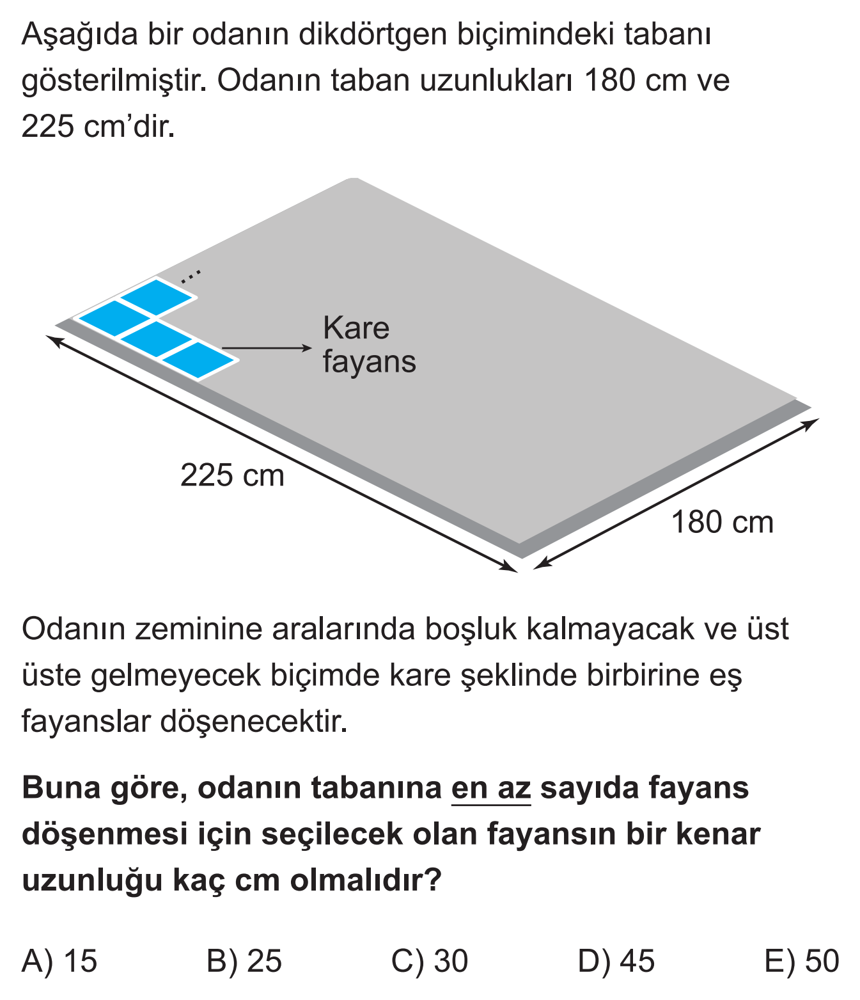
Çözüm
- En az fayans için karenin kenarı, iki kenarın böleni olan en büyük sayı: EBOB.
- $180=2^2\cdot3^2\cdot5$, $225=3^2\cdot5^2$.
- $\text{EBOB}(180,225)=45$ cm → D.
Cevap: D
Soru 2Cevap: D
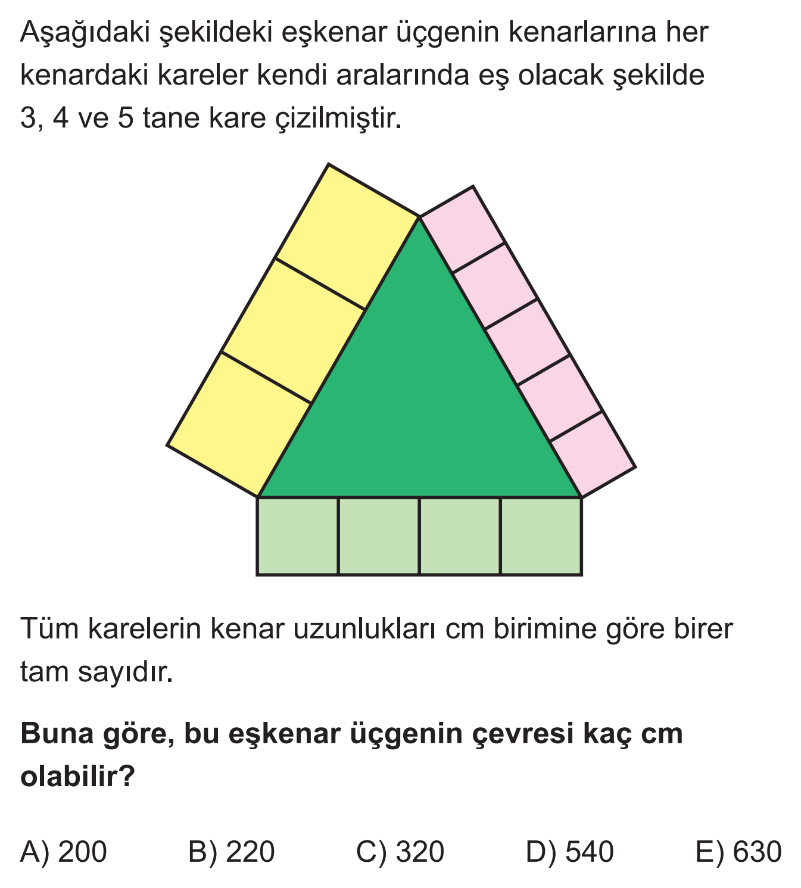
Çözüm
- Bir kenar 3, 4 ve 5 eş kareye bölünebiliyor → kenar uzunluğu 3, 4 ve 5'in ortak katı: $60k$.
- Çevre $3\cdot60k=180k$.
- Seçeneklerden yalnız $540=180\cdot3$ olabilir → D.
Cevap: D
Soru 3Cevap: B
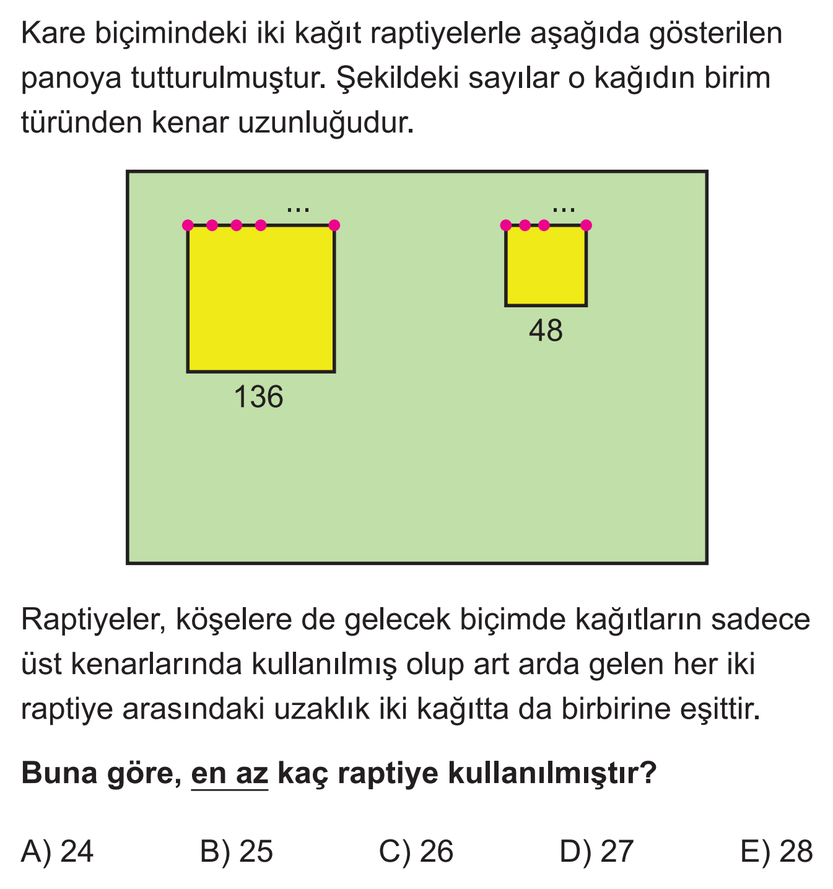
Çözüm
- Raptiyeler arası uzaklık her iki kağıtta aynı; en az raptiye için bu uzaklık $\text{EBOB}(136,48)=8$.
- Köşeler dâhil: $\frac{136}8+1=18$ ve $\frac{48}8+1=7$ raptiye.
- Toplam $25$ → B.
Cevap: B
Soru 4Cevap: D
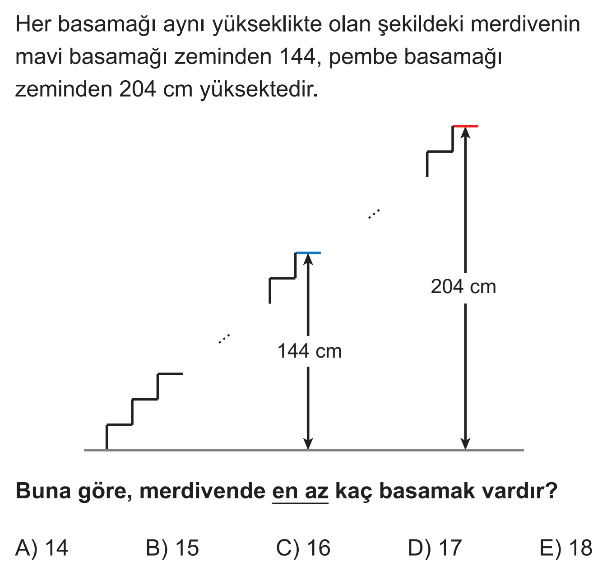
Çözüm
- Basamak yüksekliği hem 144'ü hem 204'ü bölmeli.
- En az basamak için en büyük yükseklik: $\text{EBOB}(144,204)=12$ cm.
- En üst basamak 204 cm'de: $\frac{204}{12}=17$ basamak → D.
Cevap: D
Soru 5Cevap: C
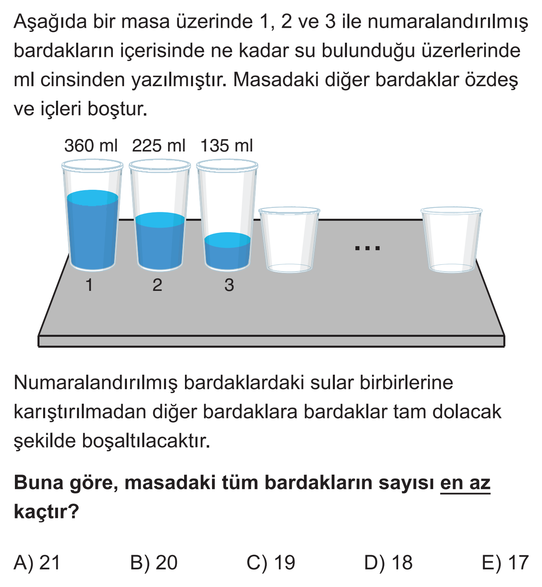
Çözüm
- Boş bardağın hacmi 360, 225 ve 135'in ortak böleni; en az bardak için $\text{EBOB}=45$ ml.
- Doldurulan bardak: $8+5+3=16$.
- Numaralı 3 bardakla birlikte $19$ bardak → C.
Cevap: C
Soru 6Cevap: E
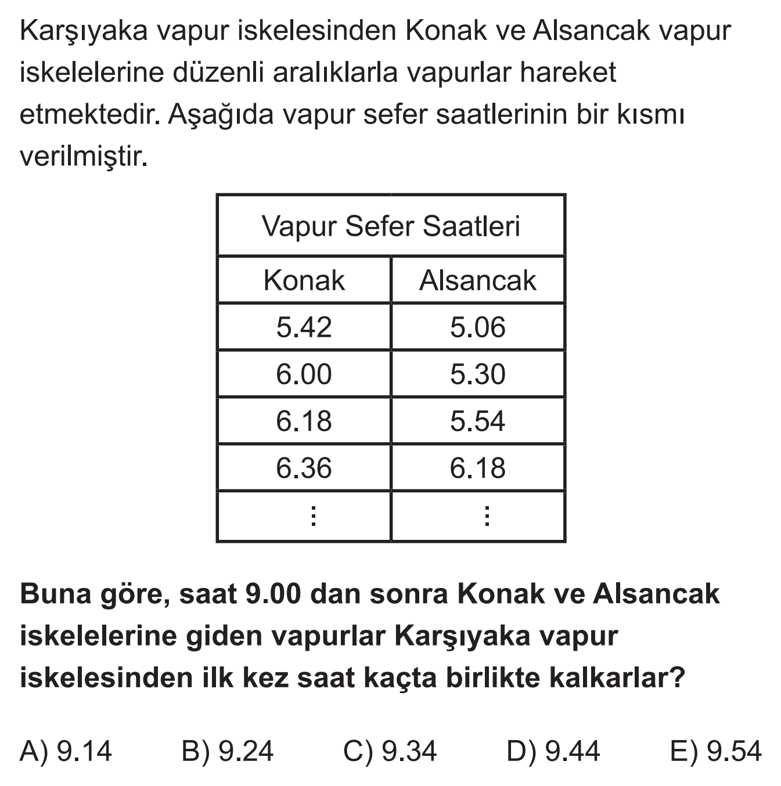
Çözüm
- Konak seferleri 18 dakikada, Alsancak seferleri 24 dakikada bir; ikisi 6.18'de birlikte.
- Birlikte kalkış her $\text{EKOK}(18,24)=72$ dakikada: 6.18, 7.30, 8.42, 9.54.
- 9.00'dan sonra ilk: 9.54 → E.
Cevap: E
Soru 7Cevap: C
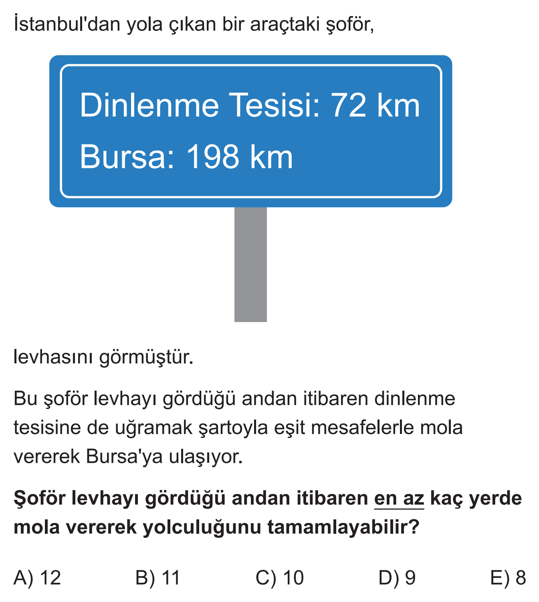
Çözüm
- Molalar eşit aralıklı ve dinlenme tesisi (72 km) bir mola yeri: aralık 72 ile 198'i bölmeli.
- En az mola için aralık $\text{EBOB}(72,198)=18$ km.
- $\frac{198}{18}=11$ aralık; Bursa dışındaki duraklar $11-1=10$ → C.
Cevap: C
Soru 8Cevap: E
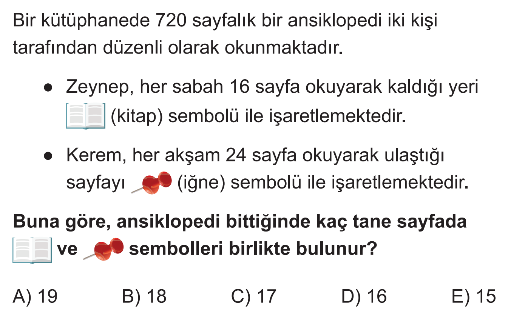
Çözüm
- Zeynep 16'nın, Kerem 24'ün katı olan sayfaları işaretliyor.
- İki sembol birlikte $\text{EKOK}(16,24)=48$'in katlarında.
- $\frac{720}{48}=15$ sayfa → E.
Cevap: E
Soru 9Cevap: A
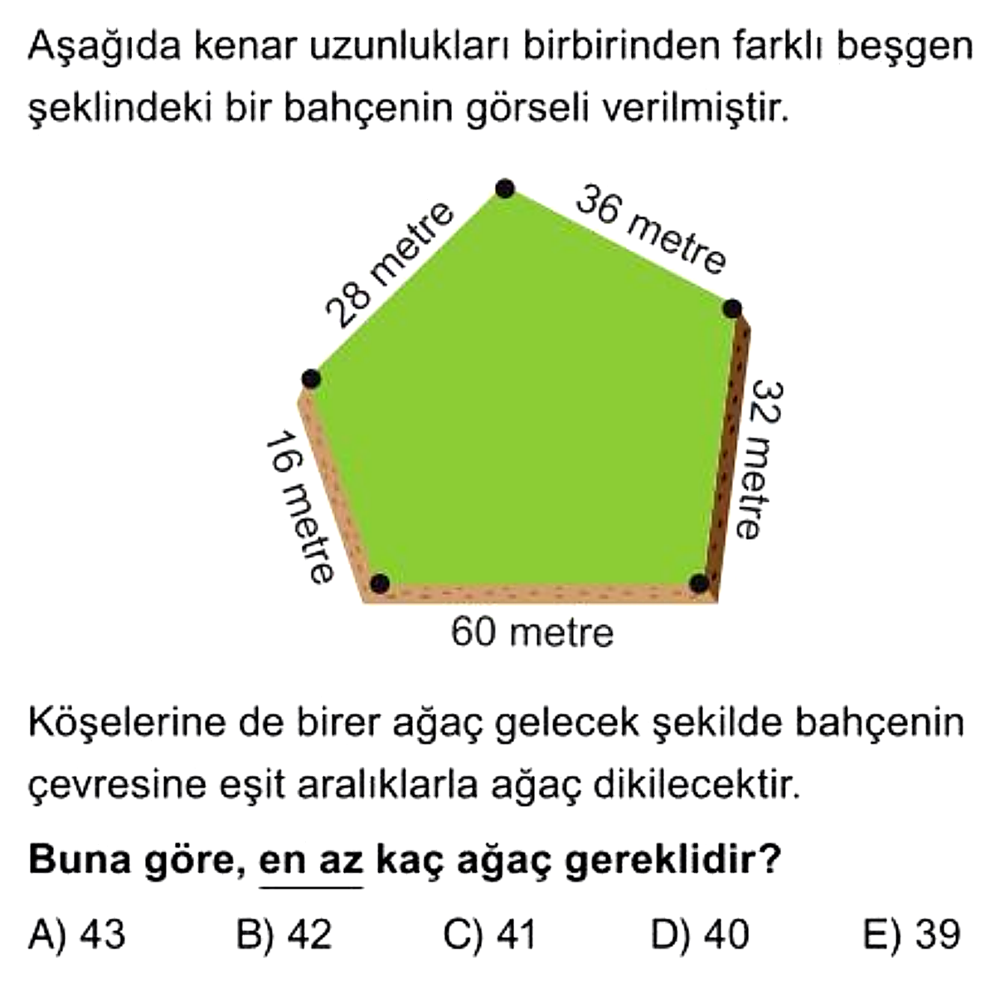
Çözüm
- Ağaçlar arası uzaklık tüm kenarları bölmeli: $\text{EBOB}(28,36,32,60,16)=4$.
- Çevre $28+36+32+60+16=172$ m.
- Kapalı çevre: $\frac{172}4=43$ ağaç → A.
Cevap: A
Soru 10Cevap: B
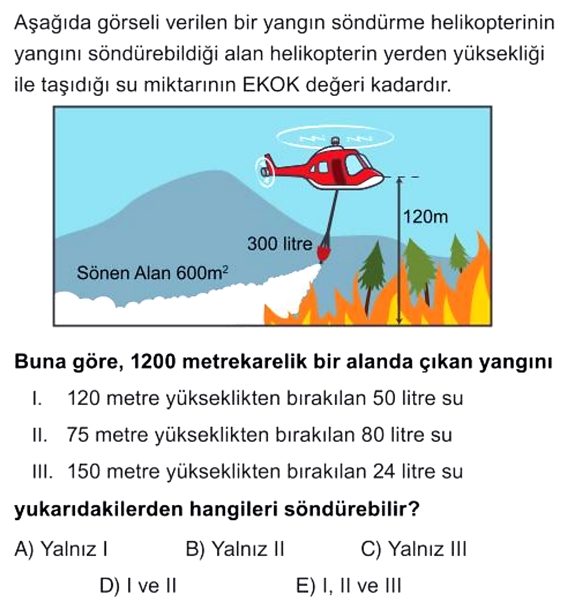
Çözüm
- Söndürülen alan $=\text{EKOK}(\text{yükseklik},\text{su})$; en az 1200 m² gerekir.
- I: $\text{EKOK}(120,50)=600$; II: $\text{EKOK}(75,80)=1200$; III: $\text{EKOK}(150,24)=600$.
- Yalnız II söndürür → B.
Cevap: B
Soru 11Cevap: A
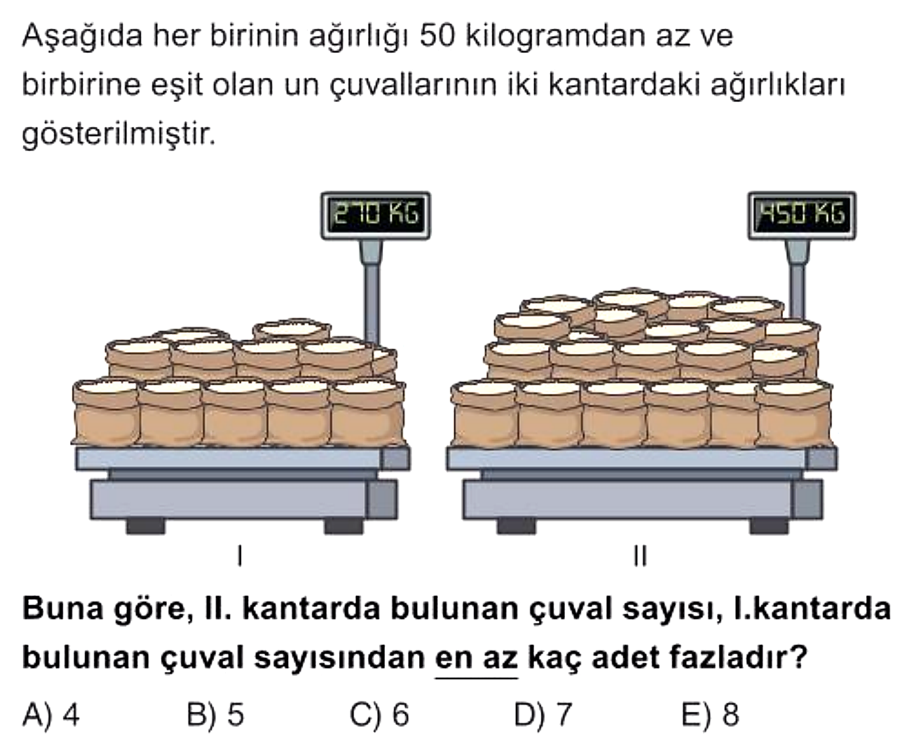
Çözüm
- Çuval ağırlığı 270 ve 450'nin ortak böleni ve 50'den az.
- $\text{EBOB}(270,450)=90$; fark en az olsun diye en ağır çuval: 45 kg.
- $\frac{450}{45}-\frac{270}{45}=10-6=4$ → A.
Cevap: A
Soru 12Cevap: E
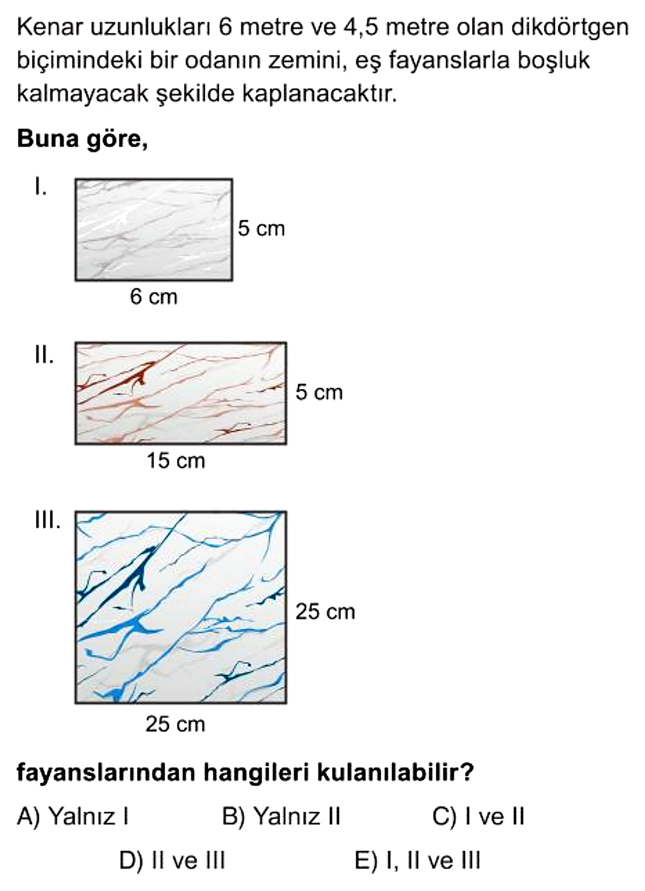
Çözüm
- Oda $600\times450$ cm; fayans kenarları bu boyutları tam bölmeli.
- I: $6\mid600$, $5\mid450$; II: $15\mid600$, $5\mid450$; III: $25\mid600$, $25\mid450$.
- Üçü de kullanılabilir → E.
Cevap: E
Soru 13Cevap: D
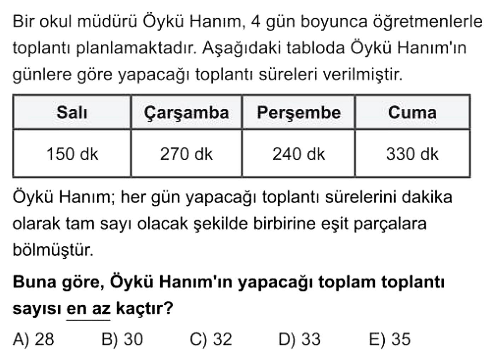
Çözüm
- Parça süresi tüm günlerin toplantı sürelerini bölmeli; en az toplantı için $\text{EBOB}(150,270,240,330)=30$ dk.
- Toplantı sayıları $5+9+8+11$.
- $33$ → D.
Cevap: D
Soru 14Cevap: D
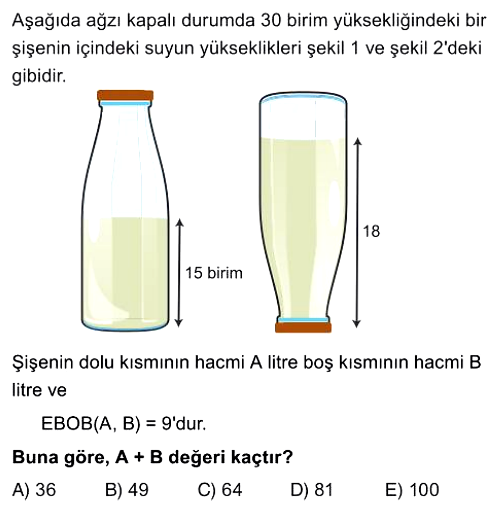
Çözüm
- Şişenin alt kısmı silindir: dik konumda dolu kısım 15 birim, ters konumda boş kısım $30-18=12$ birim yükseklik.
- Bu yüzden $\frac AB=\frac{15}{12}=\frac54$; $\text{EBOB}(A,B)=9 \Rightarrow A=45$, $B=36$.
- $A+B=81$ → D.
Cevap: D
Soru 15Cevap: E
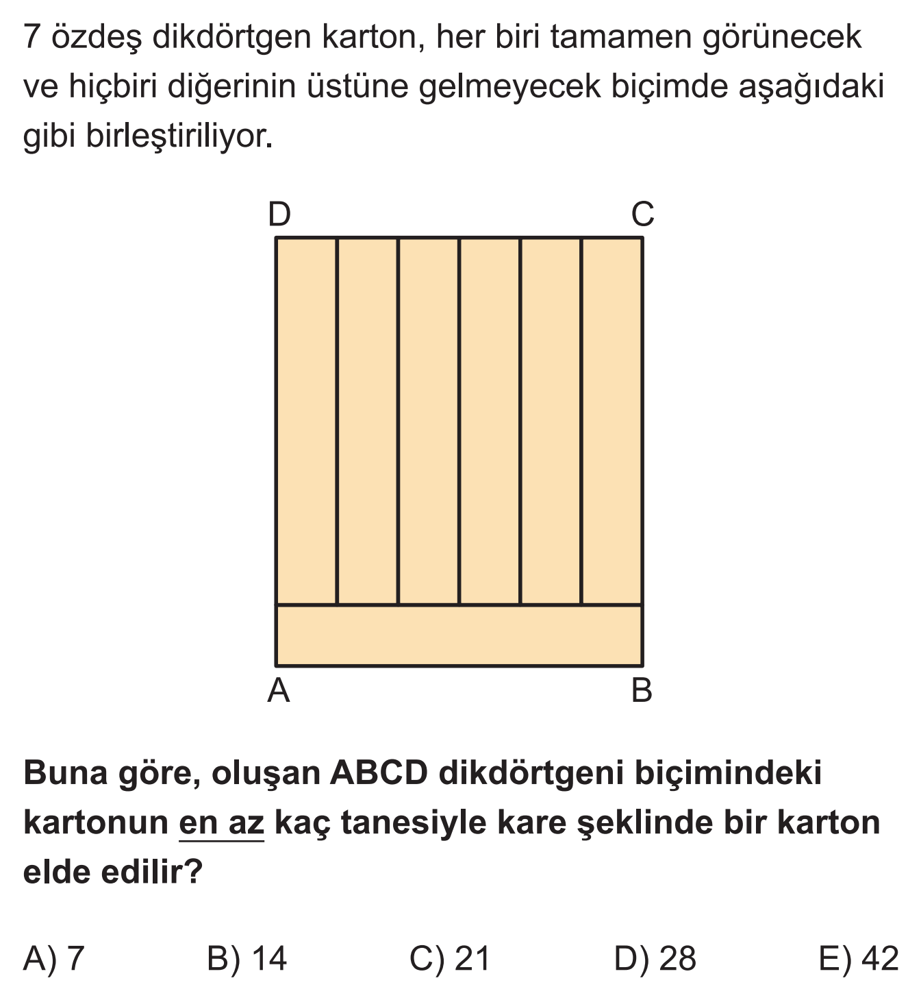
Çözüm
- Kısa kenar $w$ ise 6 dik karton yan yana: uzun kenar $6w$; ABCD'nin boyutları $6w\times7w$.
- En küçük kare kenarı $\text{EKOK}(6w,7w)=42w$.
- $\frac{42}6\cdot\frac{42}7=7\cdot6=42$ tane ABCD → E.
Cevap: E
Soru 16Cevap: D
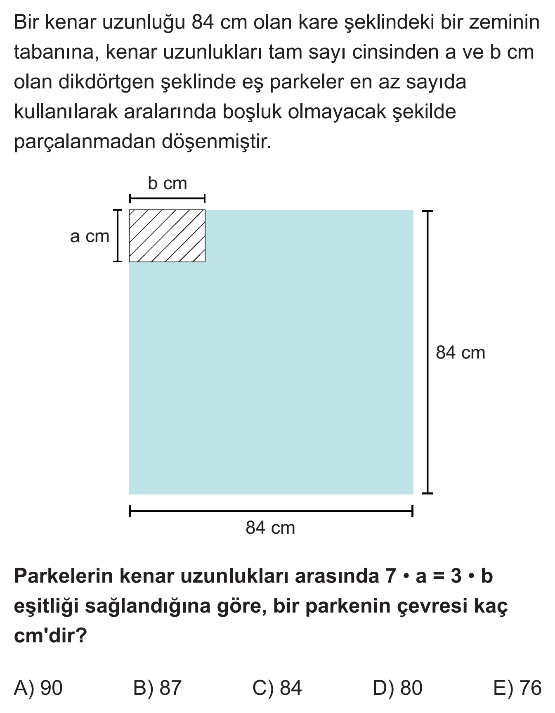
Çözüm
- $7a=3b \Rightarrow a=3k$, $b=7k$.
- Parkeler kareyi tam döşemeli: $3k$ ve $7k$, 84'ü bölmeli; en az parke için en büyük $k$: $k\mid28$ ve $k\mid12 \Rightarrow k=4$.
- $a=12$, $b=28$; çevre $2(12+28)=80$ cm → D.
Cevap: D
Soru 17Cevap: D
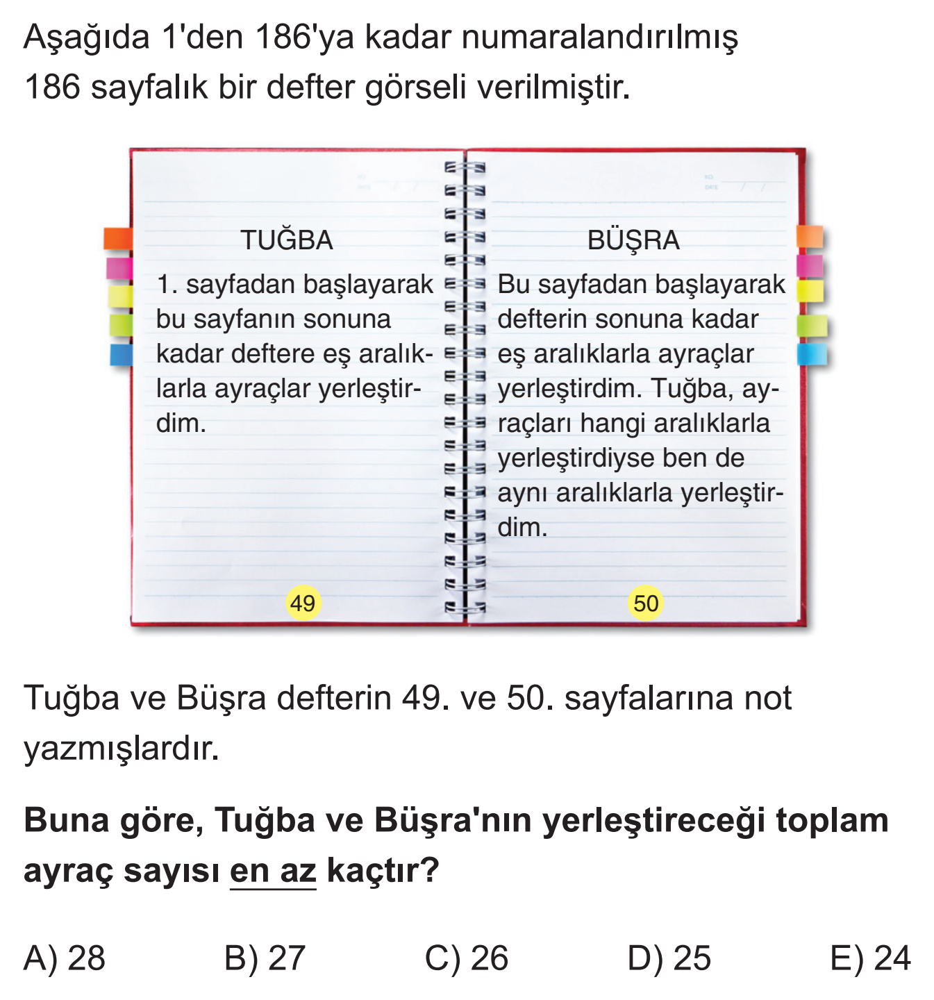
Çözüm
- Tuğba 1–49 (48 sayfalık aralık), Büşra 50–186 (136 sayfalık aralık) arasına aynı aralıklarla ayraç koyuyor.
- En az ayraç için aralık $\text{EBOB}(48,136)=8$.
- Uçlar dâhil $\frac{48}8+1=7$ ve $\frac{136}8+1=18$; toplam 25 → D.
Cevap: D
Soru 18Cevap: E
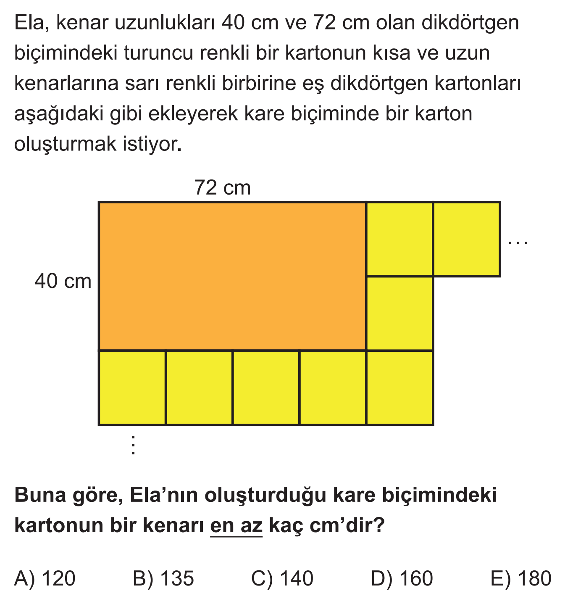
Çözüm
- Sarı kartonlar $18\times20$: alt sırada $72=4\cdot18$, sağ sütunda $40=2\cdot20$.
- Karenin kenarı $72+18k$ ve $40+20m$ → hem 18'in hem 20'nin katı.
- En küçük $\text{EKOK}(18,20)=180$ cm → E.
Cevap: E
Soru 19Cevap: B
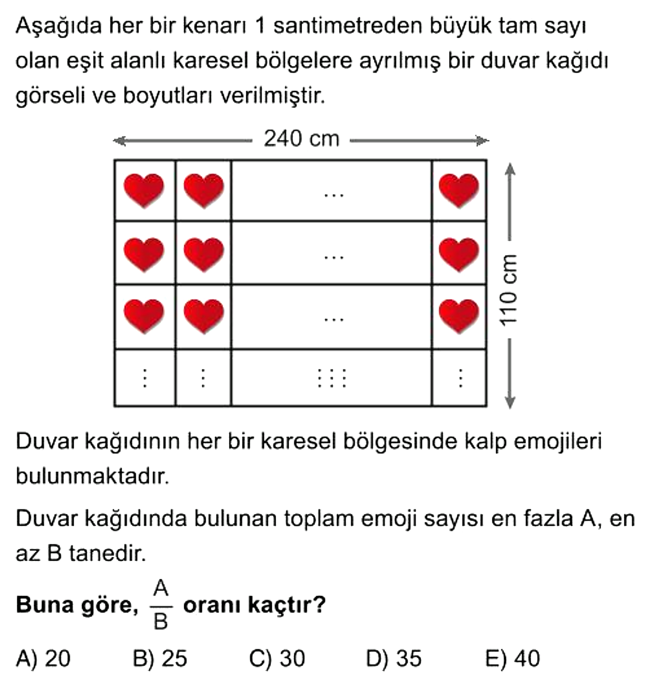
Çözüm
- Kare kenarı $s>1$, hem 240'ı hem 110'u böler: $s\in\{2,5,10\}$.
- Emoji sayısı $\frac{240\cdot110}{s^2}$: en fazla $s=2$ için $6600=A$, en az $s=10$ için $264=B$.
- $\frac AB=25$ → B.
Cevap: B
Soru 20Cevap: A
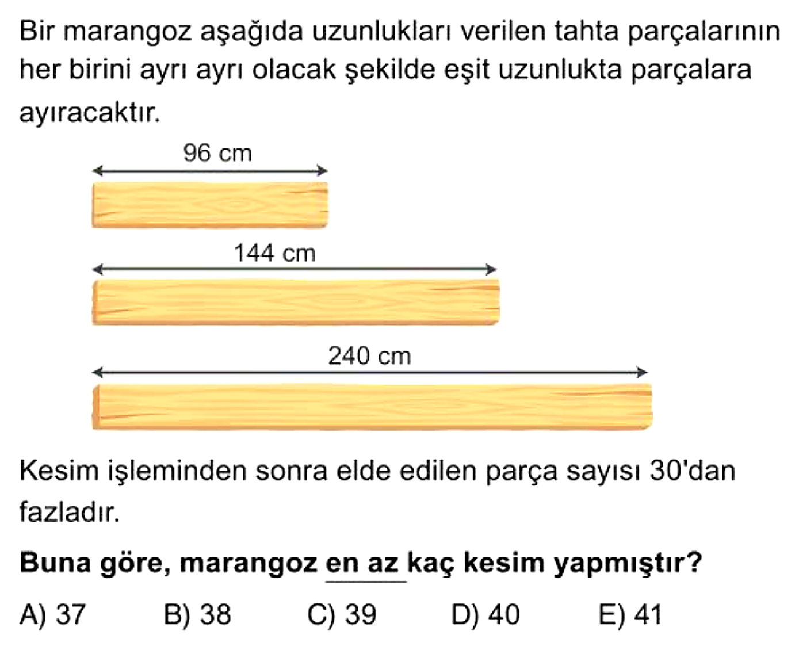
Çözüm
- Parça uzunluğu $d$, $\text{EBOB}(96,144,240)=48$'in böleni; parça sayısı $\frac{480}d>30 \Rightarrow d<16$.
- En az kesim için en büyük $d=12$: parçalar $8+12+20=40$.
- Kesim sayısı $7+11+19=37$ → A.
Cevap: A
Soru 21Cevap: A
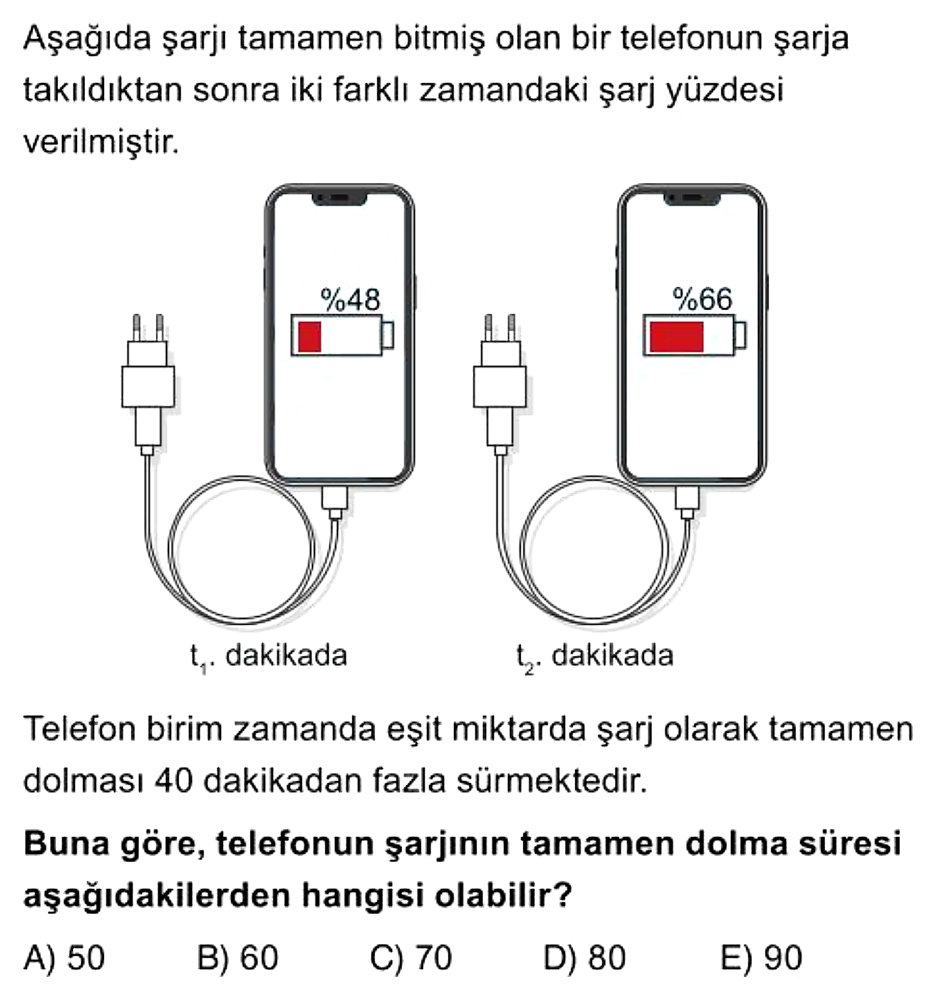
Çözüm
- Tam dolma süresi $T$ dakika ise %48 ve %66'ya $0{,}48T$ ve $0{,}66T$ dakikada ulaşılır; bunlar tam sayı.
- $0{,}48T=\frac{12T}{25}$ ve $0{,}66T=\frac{33T}{50}$ tam sayı → $T$, 50'nin katı.
- $T>40$ için seçeneklerde $50$ → A.
Cevap: A
Soru 22Cevap: D
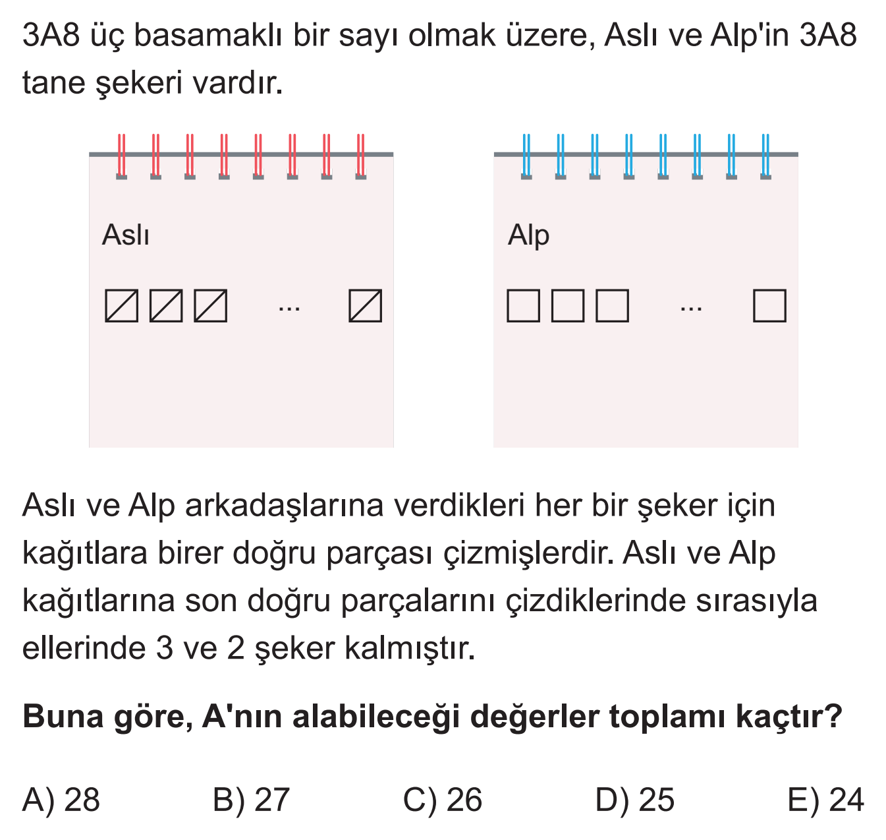
Çözüm
- Aslı her şekil için 5, Alp 4 doğru parçası çiziyor; kalan şekerler 3 ve 2.
- $3A8$ sayısı 5'e bölününce 3, 4'e bölününce 2 kalanını vermeli; 5 için koşul her zaman sağlanır ($8$).
- $A8\equiv2 \pmod 4 \Rightarrow A$ tek: $1+3+5+7+9=25$ → D.
Cevap: D
Soru 23Cevap: D
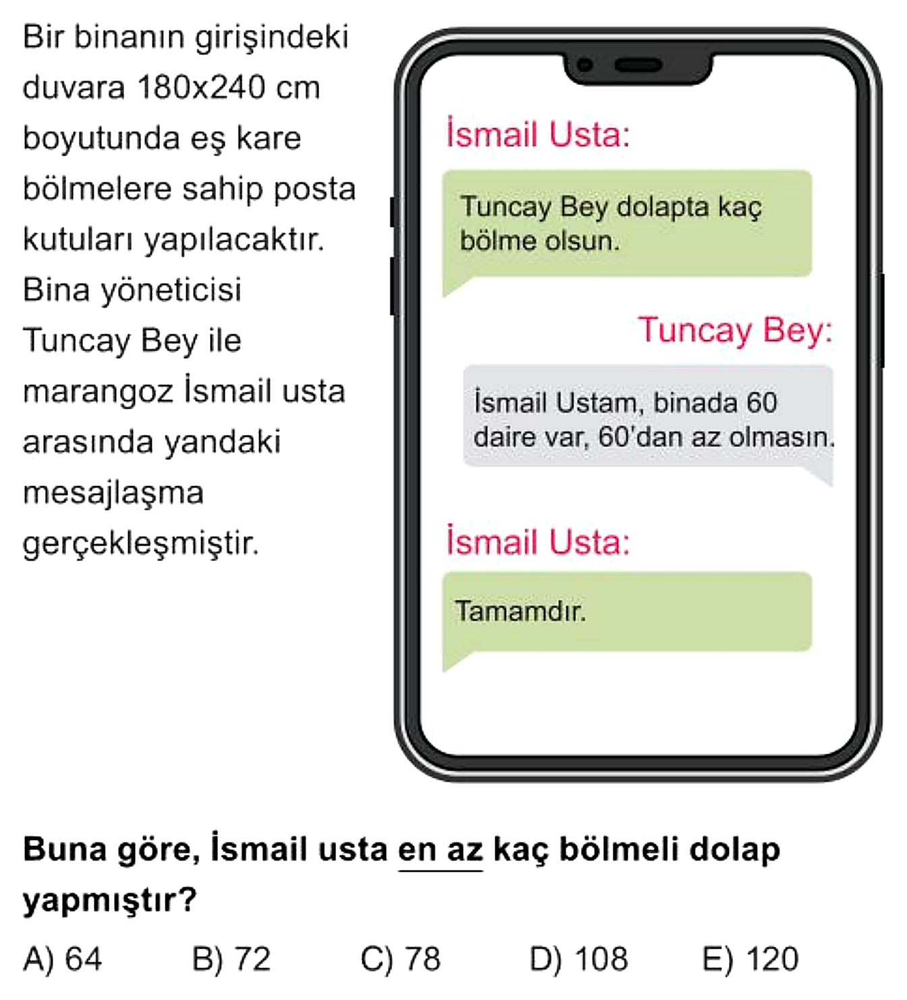
Çözüm
- Kare kenarı $s$, $\text{EBOB}(180,240)=60$'ın böleni; bölme sayısı $\frac{180\cdot240}{s^2}\ge60$.
- $s^2\le720 \Rightarrow s\le26$; en az bölme için en büyük uygun $s=20$.
- $\frac{43200}{400}=108$ → D.
Cevap: D
Soru 24Cevap: D
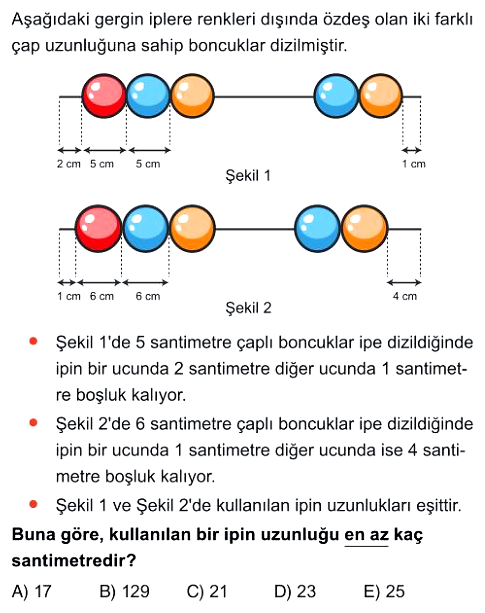
Çözüm
- İp uzunluğu $L=5n+3=6m+5$ (uçlardaki boşluklar 2+1 ve 1+4).
- $L\equiv3 \pmod 5$ ve $L\equiv5 \pmod 6$.
- En küçük $L=23$ → D.
Cevap: D